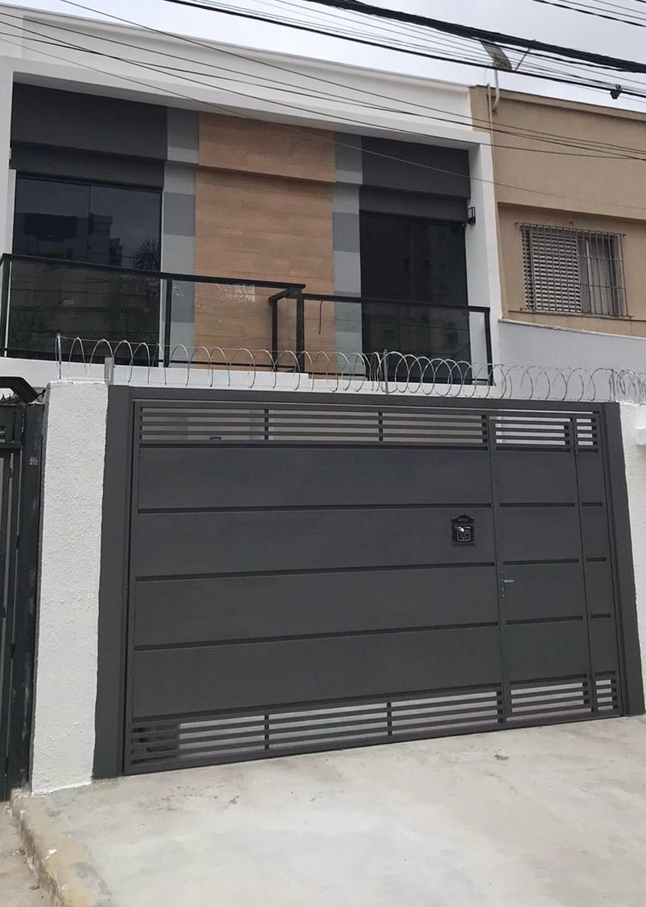

Situado na rua Guaira, a 650 metros da estacao de metro Praca da arvore(Linha 1 Azul) em Sao Paulo-SP e a 1,6 km do Shopping Plaza Sul, Nossos Studios dispõe de acomodações com TV de tela plana, Ar condicionado, Camas de casal e solteira, sofas cama, mesas com duas cadeiras,Geladeiras, fogoes, microondas e banheiros privativos totalmente equipado com chuveiros quentes. O Ohalu hotel fica a 6min da Estacao de metro Praca da arvore, proximo a Expo Imigrantes,Padarias,Restaurantes e posto de Gasolina a 1min. O aeroporto mais próximo é o Aeroporto de Congonhas, a 6km, cerca de 15min de carro.
Situado a 700 metros da Praia de Eastbourne e a 1,1 km do Píer de Eastbourne, em Eastbourne, o Osborne Aparthotel dispõe de acomodações com TV de tela plana. Há um banheiro privativo totalmente equipado com chuveiro e amenidades de banho de cortesia. O Eastbourne Miniature Steam Railway Adventure Park fica a 3,3 milhas do Aparthotel, enquanto a Glyndebourne Opera House fica a 15,5 milhas da propriedade. O aeroporto mais próximo é o Aeroporto de Londres Gatwick, a 46 milhas do Osborne Aparthotel
[Foto da Casa]